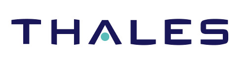
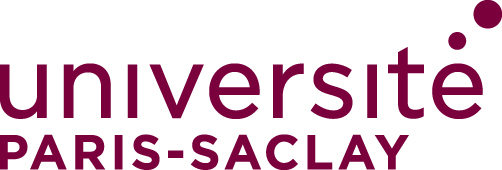
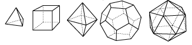
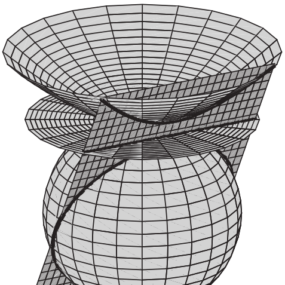

| Doctorat  Algorithmique des courbes destinées aux contextes de la cryptographie bilinéaire et post-quantique |
| M2R Algèbre appliquée  Mention TB (16.7/20) Classement : 1 |
| Agrégation externe de Mathématiques Option algèbre et calcul formel Rang : 92 |
| Master 1 Mathématiques fondamentales Université de Rennes 1 |
| Licence de Mathématiques Université de Rennes 1 |
| Projet de C sur les courbes elliptiques |
| Résultats développés pour l'agrégation externe  |
| Stage de recherche Introduction aux algèbres de Lie |
| Travail encadré de recherche  Avec Jordan Trémoureux |
| Stage d'initiation à la recherche Théorème de Gromov et groupes de type fini à croissance linéaire |
| Campus de l'Université de Versailles 2017 |
| Rentrée à l'IHES Bourse FMJH 09/2017 |
| Tour de Maths de Rennes 2016 |
| Vice-champion de France universitaire 2014 |